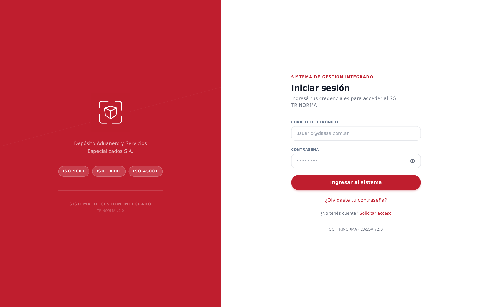
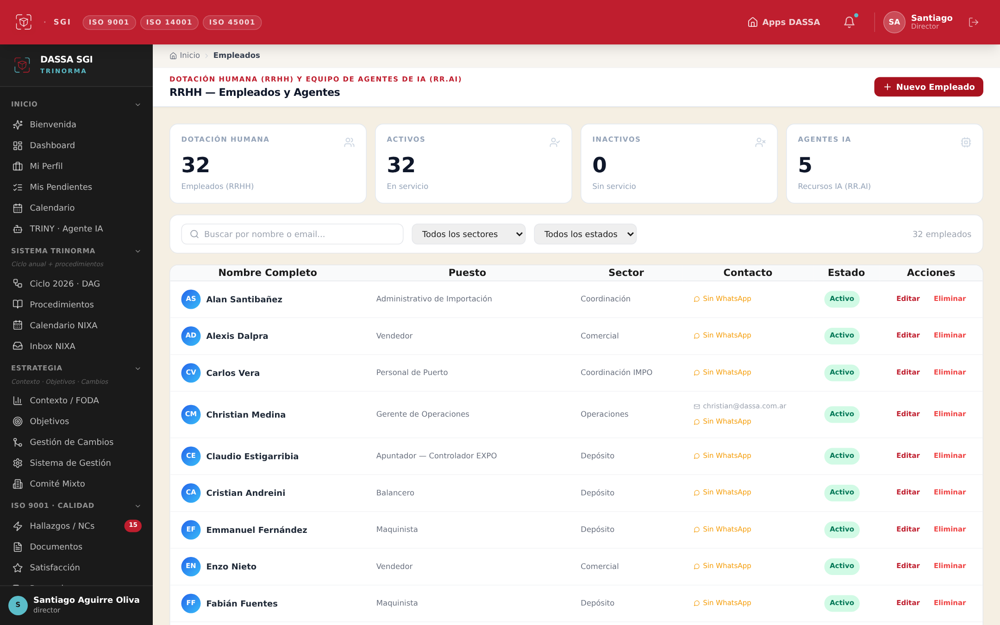
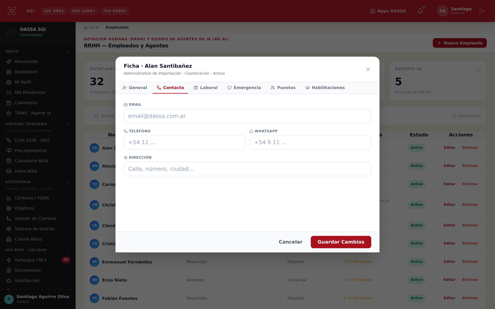
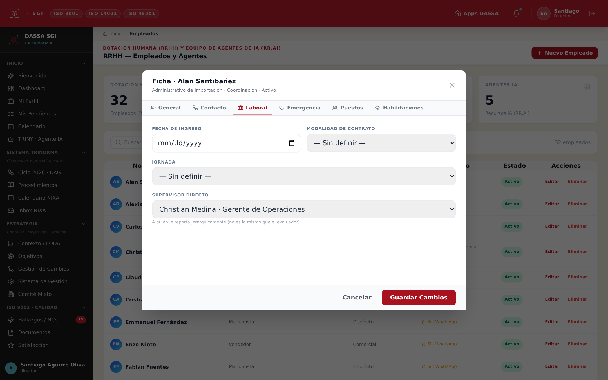
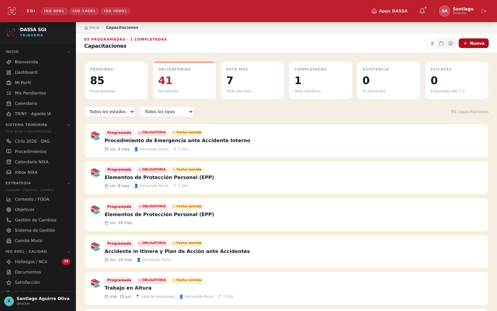
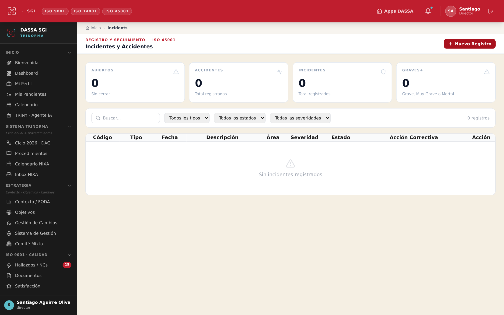
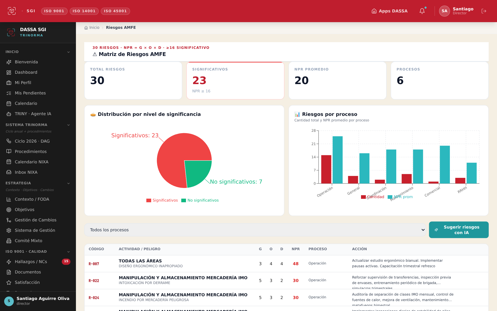
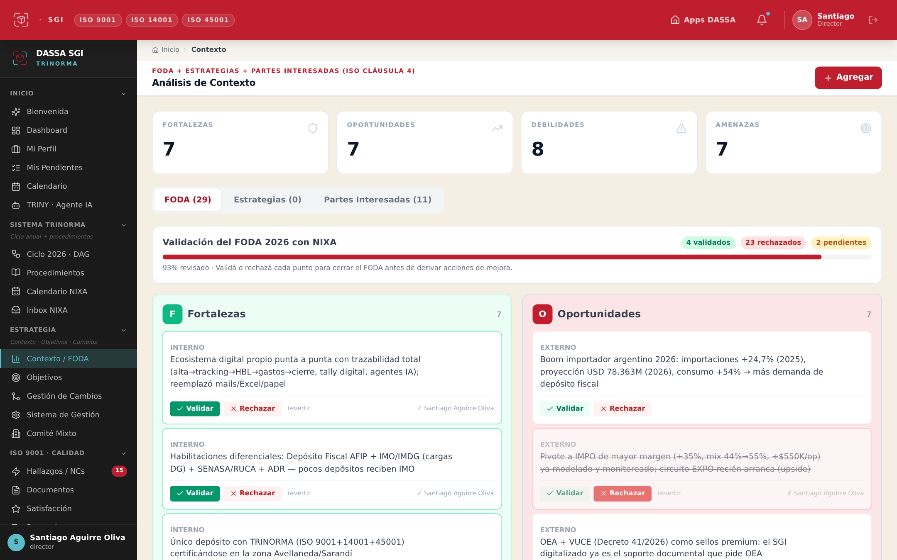

Andá a trinorma.dassa.com.ar e iniciá sesión con tu correo @dassa.com.ar y tu contraseña (la misma del SSO de DASSA Apps). Si no tenés acceso, tocá “Solicitar acceso”.

Pantalla de inicio de sesión del SGI TRINORMA
El menú de la izquierda es siempre el mismo. Cada instructivo te dice exactamente qué ítem tocar y qué botón apretar.
PARA MARÍA · RRHH / Administración
Contactos del personal + Capacitaciones
Tres cargas. La #1 es la más urgente: sin datos de contacto no salen avisos, comunicados ni boletines.
1) Datos de contacto del personal — PRIORITARIO
Hoy ningún empleado tiene WhatsApp ni fecha de ingreso, y 24 de 32 no tienen email.
Menú izquierdo → RRHH → Empleados. En la columna Contacto casi todos dicen “Sin WhatsApp” en rojo: eso es lo que vamos a completar.

Empleados — columna “Contacto” en rojo
En la fila de la persona, tocá “Editar” (columna Acciones, a la derecha).
Tocá la pestaña “Contacto” y completá Email, Teléfono y WhatsApp. El WhatsApp va con código: +54 9 11 …

Ficha del empleado · pestaña Contacto
Tocá la pestaña “Laboral” y cargá la Fecha de ingreso. Después, el botón rojo “Guardar Cambios”.

Ficha del empleado · pestaña Laboral
Repetí con cada persona (faltan ≈24 contactos; los 8 que ya tienen email igual necesitan WhatsApp + fecha de ingreso).
2) Capacitaciones ya dictadas
Hay 91 programadas pero solo 1 figura completada, sin asistentes ni evidencia. Lo que no está cargado, en auditoría “no existe”.
Menú izquierdo → Capacitaciones. Las tarjetas en rojo dicen “Fecha vencida”.

Capacitaciones · varias vencidas
Tocá la capacitación que ya se dio → marcá asistentes y subí la evidencia (foto de la planilla de firmas). Guardá.
Las que figuran “Fecha vencida” → abrilas y ponéles nueva fecha.
Incidentes (hoy hay 0): menú → Incidentes → “+ Nuevo Registro”. Cargá accidentes / incidentes / casi-accidentes con investigación (5W2H) y, si aplica, ART.

Incidentes · 0 registros hoy
AMFE por puesto: menú → Riesgos AMFE. Vinculá los peligros a cada puesto. Podés usar “Sugerir riesgos con IA”.

Matriz de Riesgos AMFE
Rondas de inspección: calibrar geofence + ítems de SSHH + flota real de autoelevadores. Esto lo coordinamos juntos.
Capacitaciones SySO vencidas: en Capacitaciones, reprogramá EPP, Emergencia Interna, etc.
Validar el FODA 2026 (29 ítems): menú → Contexto / FODA. Hay una barra “Validación del FODA 2026 con NIXA” con el avance. Cada punto tiene botones Validar / Rechazar. Esto destraba las acciones de mejora y el ciclo 2026.

Contexto / FODA · botones Validar / Rechazar por ítem
Requisitos legales: en Legal, verificá/firmá los 2 vencidos (CAA + ADR) + los 10 sin fecha de verificación.
Reuniones: desde Comité Mixto → “Nueva reunión” (ya tenés el botón habilitado) podés coordinar la auditoría interna y el acta de revisión por la dirección.
Menú → Comité Mixto → botón rojo “Nueva reunión”. El asistente tiene 3 pasos: (1) datos + asistentes, (2) revisión de pendientes del comité anterior, (3) nuevas tareas. Al cerrarla, TRINY firma el acta y manda el resumen por mail a toda la Trinorma.